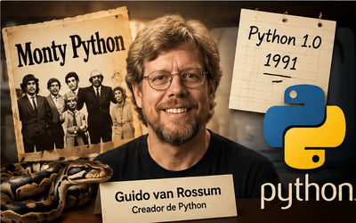
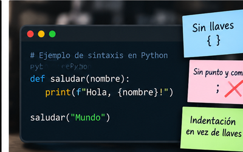
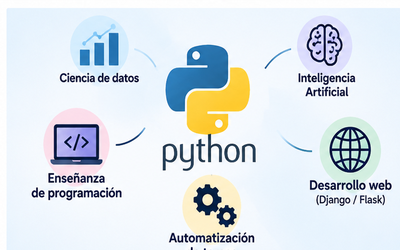

Python
Historia
Python fue creado por Guido van Rossum a fines de los años 80 y publicado por primera vez en 1991. Su nombre no viene de la serpiente, sino del grupo de comedia británico Monty Python.

Sintaxis
Una de las razones por las que Python es tan popular para empezar a programar es que su sintaxis es muy parecida al lenguaje natural, usa la indentación en vez de llaves para organizar el código y no requiere punto y coma al final de cada línea.

Usos
Se usa muchísimo en ciencia de datos, inteligencia artificial, desarrollo web (con Django o Flask), automatización de tareas y como primer lenguaje en la enseñanza de programación.
